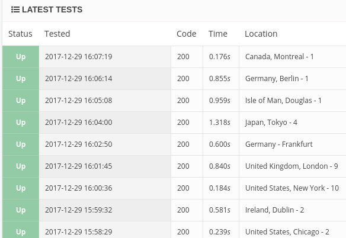

Teach your sites to call for help
Automate problem reporting for online services
Dan Poirier
Caktus Consulting Group
https://caktusgroup.com
Since 1992...
- 1992-2011: IBM
- 2011-present: Caktus
Libyan Voter Registration
Keep it running
Is my site down?
Site down
Considerations for web page monitoring
- Test non-trivial pages:
- behind login
- database access required
- Don't get flooded with alerts
Site outage in Libya
Performance
Memory, CPU, Disk
Domain expiration
Certificate expiration
Gather your logs
View logs from any server
Save searches
View messages
Be alerted when searches match
Details for central logging
- Security: logs sent to a service that is append-only cannot be modifed by an attacker to hide their trail
- Security: if the logs are accessible elsewhere, you might not even need to let your developers have login access to the servers
- There are different kinds of logs, so consider treating them individually. Some might warrant long storage, others fairly short, for example.
Logging on the Libya project
We have over a dozen servers running haproxy, vumi, postgresql, nginx, Django, and other services that all have their own logs. It wouldn't be feasible to check those logs directly on every server.Configuring log message forwarding
Python logging configuration
{
...
'handlers': {
'SysLog': {
'level': 'DEBUG',
'class': 'logging.handlers.SysLogHandler',
'formatter': 'simple',
'address': ('logsN.papertrailapp.com', XXXXX)
},
...
}
The dog in the nighttime

Healthchecks.io and remote logging
Example crontab:
# crontab
@daily /usr/local/bin/daily \
| logger\-n log.example.com -p XXX \
&& curl https://hchk.io/8fae4...
healthchecks.io from Python
import requests
requests.get("https://hchk.io/327b...")
Recap
- Site down
- Site slow
- Possible upcoming problems:
- Resources: Memory, CPU, Disk, ...
- Expirations: Domains, SSL certificates
- Collect logs
- Monitor periodic tasks
Errors on your site
Django's error emails
From: django@yoursite.com
To: your_inbox
Subject: Someone hit an error
Request URL & headers
Reponse status
Stack trace
Django settings
A flood of error emails

Sentry
Configure Sentry
# Python package $ pip install raven --upgrade# Django config INSTALLED_APPS = ( ... 'raven.contrib.django.raven_compat' ) RAVEN_CONFIG = { 'dsn': 'https://<key>:<secret>@sentry.io/<project>' }
Sentry in Libya
We have our own sentry server in the datacenter in Libya that handles all the errors from Django and Vumi, and notifies us of problems while gathering diagnostic information.
New Relic
Configuring New Relic to monitor your Python-based server
# Install
$ pip install newrelic
# Create config file
$ newrelic-admin generate-config YOUR_LICENSE_KEY \
<path>/newrelic.ini
# Run your server
$ NEW_RELIC_CONFIG_FILE=<path>/newrelic.ini \
newrelic-admin run-program \
COMMAND_THAT_STARTS_YOUR_SERVER
ELK: ElasticSearch, Logstash, Kibana
ELK monitors resources and gathers logs

ELK gathers data
Send any numbers you want to ELK
Then you can list them, graph them, set up alerts from them, compare them to other metrics, etc.
ELK and Libya project
- Performance
- Resources: CPU, Memory, Disk
Kibana complexity
Recap
- Get notified when users hit errors
- Don't get flooded - use Sentry
- For more in-depth data, New Relic
- Build it yourself using ELK
Image sources
- Libyan Voter Registration: https://www.caktusgroup.com/case-study/worlds-first-sms-voter-registration-system/
- Track maintenance vehicle: https://commons.wikimedia.org/wiki/File:UP_track_maintenance_vehicle.jpg
- Logs: https://commons.wikimedia.org/wiki/File:Logs-Port-of-Burnie-20160208-004.jpg
- Dog in the nighttime: https://pixabay.com/en/dog-howl-moon-tree-sky-star-647533/
- Great Wave: https://en.wikipedia.org/wiki/File:The_Great_Wave_off_Kanagawa.jpg